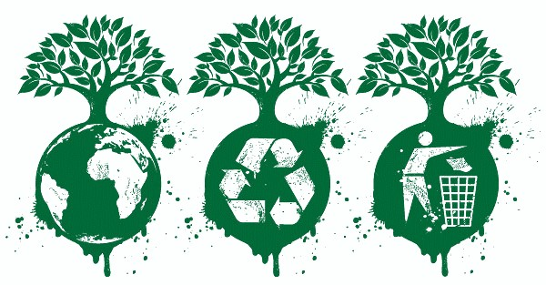
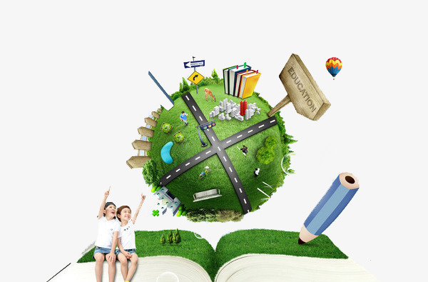

Educación ambiental.
Es un mecanismo pedagógico para salvaguardar el Medio ambiente, además de generar una conciencia y soluciones pertinentes a los problemas ambientales actuales causados por actividades antropogénica y los efectos de la relación entre el hombre y el entorno, además infunde la interacción que existe dentro de los Ecosistemas. Los procesos y factores físicos, químicos y biológicos, como estos reaccionan, se relacionan e intervienen entre sí, es otro de los tópicos que difunde la Educación Ambiental, todo esto con el fin de entender el mundo y formar una cultura conservacionista donde el hombre aplique en todos los procesos productivos técnicas limpias dandole solución a los problemas ambientales, permitiendo de esta forma el desarrollo sostenible.
Conceptos
Educación ambiental
Proceso permanente en que los individuos y la colectividad cobran conciencia de su medio y adquieren los conocimientos, los valores, las competencias, la experiencia y la voluntad, capaces de hacerlos actuar, individual y colectivamente, para resolver los problemas actuales y futuros del medio ambiente.
Hoy ese proceso permanente, toma una connotación especial, pues se habla de una educación ambiental para el desarrollo sostenible, lo que significa que se debe tener muy en cuenta para la labor educativa, las dimensiones sociopolítica-cultural, la económica y la ecológica del desarrollo sostenible.
Cultura Ambiental
Un proceso permanente en el que los individuos y la colectividad cobran conciencia de su medio y adquieren los conocimientos, los valores, las competencias, las experiencias y la voluntad, capaces de hacerlos actuar individual y colectivamente para resolver los problemas actuales y futuros del medio ambiente.
Objetivos
Teniendo en cuenta la carta de Belgrado, realizada en octubre de 1975, los Objetivos de la educación ambiental a nivel mundial son:
Toma de conciencia
Ayudar a las personas y a los grupos sociales a que adquieran mayor sensibilidad y conciencia del medio ambiente en general y de los problemas.
Conocimientos
Ayudar a las personas y a los grupos sociales a adquirir una comprensión básica del medio ambiente en su totalidad, de los problemas conexos y de la presencia y función de la humanidad en él, lo que entraña una responsabilidad crítica.
Actitudes
Ayudar a las personas y a los grupos sociales a adquirir valores sociales y un profundo interés por el medio ambiente que los impulse a participar activamente en su protección y mejoramiento.
Capacidad de evaluación
Ayudar a las personas y a los grupos sociales a evaluar las medidas y los programas de educación ambiental en función de los factores ecológicos, políticos, sociales, estéticos y educativos.
Participación
Ayudar a las personas y a los grupos sociales a que desarrollen su sentido de responsabilidad y a que tomen conciencia de la urgente necesidad de prestar atención a los problemas del medio ambiente, para asegurar que se adopten medidas adecuadas al respecto.
Estrategia nacional de la educación ambiental
¨La Educación es de importancia crítica para promover el Desarrollo Sostenible y aumentar la capacidad de las poblaciones para abordar cuestiones ambientales y de desarrollo... Para ser eficaz, la educación en materia de medio ambiente y desarrollo debe ocuparse de la dinámica del medio físico y biológico, y del medio socioeconómico y el desarrollo humano (que podría comprender el desarrollo espiritual), integrarse a todas las disciplinas y utilizar métodos académicos y no académicos y medios efectivos de comunicación".
CONTEXTO EN QUE SE INSCRIBE LA ESTRATEGIA
La globalización de la economía asociada a modelos de desarrollo basados en las leyes del capital y en valores éticos - que justifican el deterioro de los ecosistemas y la pérdida de la biodiversidad, así como la injusta distribución de las riquezas y por consiguiente el aumento de la pobreza- están intrínsecamente vinculados a procesos de homogeneización cultural, orientados a exportar los patrones insostenibles de consumo que caracterizan a las sociedades económicamente desarrolladas y que son elementos consustantivos de la problemática ambiental. Este panorama sitúa a la educación como una premisa de importancia significativa para lograr los procesos de cambio, que deben orientar a la humanidad hacia un sistema de relaciones más armónicas entre la Sociedad y la Naturaleza, que permitan el tránsito hacia niveles de desarrollo sostenibles y propicien una calidad de vida decorosa y equitativa para la sociedad de la Tierra. En el caso cubano, como consecuencia del hostigamiento político, el bloqueo económico que dura ya más de 37 años, y la amenaza a nuestra seguridad y soberanía por el estado más poderoso del mundo; dependemos como ningún otro país de nuestras propias fuerzas y recursos; en cuyo contexto, cobra una singular importancia el rigor con que se manejen nuestras riquezas y nuestros problemas y la medida en que seamos capaces de integrar los procesos naturales, sociales y culturales con los de desarrollo económico. Las propias dificultades de la situación del país generadas a partir del bloqueo económico impuesto, propiciaron al mismo tiempo una oportunidad única para desarrollar un proceso de construcción colectiva y creativa de alternativas de conocimiento científico y soluciones prácticas a los problemas ambientales que hoy preocupan a la humanidad en su conjunto. La problemática ambiental cubana, está condicionada por una difícil situación económica, y caracterizada por un lado, por una aún insuficiente conciencia ambiental de los actores económicos y sociales, y por otro, por una también insuficiente aplicación de una política que en la práctica integre la dimensión ambiental a los procesos de desarrollo. Es por ello que se requiere de un manejo racional basado en la armonía entre la conservación de las conquistas sociales alcanzadas y la protección sostenible de nuestros recursos naturales, y para ello se necesita de una población capacitada, que conscientemente incorpore en su vida cotidiana la dimensión ambiental. En este complejo proceso juegan un importante papel la forma de pensar y los estilos de comportamiento de las personas y de las comunidades, las políticas de los sectores de la economía, de la ciencia, de la educación y de la cultura pero, sobre todo, la existencia de una voluntad política y la capacidad para integrarlos. El gobierno cubano consciente de esta realidad, creó el Ministerio de Ciencia, Tecnología y Medio Ambiente y dentro de sus atribuciones y funciones le asignó las de dirigir y controlar las Estrategias y Programas de Educación Ambiental.

Coordinación Intersectorial e Interinstitucional
Para poder que el proceso de la educación ambiental tenga un componente dinámico, creativo, eficaz y eficiente dentro de la gestión ambiental, es necesario que se realice un trabajo conjunto entre todos los sectores y las organizaciones de la sociedad civil involucradas en el tema ambiental para que se puedan llevar a cabo de manera mas rápida estos procesos de formación.
Inclusión de la Educación Ambiental en la Educación Formal y No formal
Este se realiza con el fin que dentro de la educación formal se lleve la inclusión de la dimensión ambiental en la educación básica, media y superior. Y la educación No formal se hace necesario la implementación de proyectos de educación ambiental por parte de las diferentes entidades que trabajen con fines ambientales, como estas pueden ser jornadas de sensibilización, charlas, celebración de días de importancia ambiental, entre otros.
-
Participación Ciudadana.
-
Investigación
-
Formación de Educadores Ambientales
-
Diseño, implementación, apoyo y promoción de planes y acciones de comunicación y divulgación.
-
Impulso a proyectos Ambientales con perspectiva de genero.
-
Trabajar en los centros escolares y en la comunidad con el objetivo de convertirlos en diseñadores ecológicos.
-
Propiciar espacios abiertos para el intercambio de temas ambientales entre especialistas y pueblo en general.
PROYECCIONES PARA LA ESTRATEGIA
A partir del reconocimiento de los logros alcanzados hasta el momento tanto, en lo formal como en lo no formal, y de lo que aún nos falta por lograr, debemos disponernos a producir cambios en el modo de concebir y de aplicar la introducción de la dimensión ambiental en los Planes, Programas y Proyectos en general, con una concepción sistémica de los problemas ambientales, y una visión interdisciplinaria en el proceso de introducción, lo que requiere de una participación armónica y coherente innovadora y comprometida de todos los actores y sectores.
Es el momento de superar la concepción tradicional en la que se identifica el medio ambiente con la Naturaleza y la educación ambiental con la educación para la conservación o para la protección de la naturaleza, lo que se hace más evidente en la práctica educativa.
Una importante dirección de la Estrategia es sin dudas la vinculada a los procesos educativos hacia las comunidades para capacitarlas en la participación en la toma de decisiones, y en la solución de los problemas locales que contribuyan a mejorar las condiciones de su medio ambiente natural y psicosocial, transitando hacia modos de vida más sanos.
Importancia
La importancia de la educación ambiental está basada en el aporte de conocimientos e información que faciliten al hombre interpretar los Fenómenos naturales, así como los procesos dinámicos de cambio que ocurren dentro de ellos, ósea que con los conocimientos suministrados por la educación ambiental se pueden explicar fenómenos climáticos (Climatología,lluvias, cambios en la temperatura, estaciones), los ciclos bioquímicos (ciclo del agua, ciclo del carbono), entre otros. El reciclaje|El Reciclaje: es uno de los objetivos específicos de la educación ambiental.Este proceso pedagógico ha dado grandes resultados a solución de problemas ambientales, lo cual también ha contribuido al proceso de desarrollo social, ha permitido así mismo alternativas para resolver los problemas de desequilibrio Ambiental, causado por el hombre a los ecosistemas naturales. En la vida diaria, esta permite que el hombre conviva mejor consigo mismo, con sus semejantes y con el medio que lo rodea, aumentando la sensibilidad al igual que su capacidad para hacer mejor uso de los recursos naturales, teniendo una actitud favorable en cuanto al mantenimiento del equilibrio ambiental y la conservación de la diversidad biológica, con lo que se puede garantizar una mejor calidad de vida para las generaciones actuales y futuras.
Herramientas
En Relación a la educación ambiental, el papel o la herramienta más importante lo juega el educador, ponente o facilitador, que en definitiva tiene a cargo la enseñanza e inculcacion como tal del tema, este actúa como posibilitador intelectual, afectiva y moral a los alumnos, que en este caso proporciona la información y valores ambientales necesarios para crear al receptor una conciencia ecológica, permitiendo de esta forma un cambio de actitudes negativas para el entorno a otras que permitan el desarrollo sostenible, que al final van llevar a cabalidad los objetivos de la educación ambiental.
Con frecuencia las actividades al aire libre, la interpretación del patrimonio natural y la observación de fauna silvestre favorecen la incorporación de la esencia de los problemas medioambientales.
